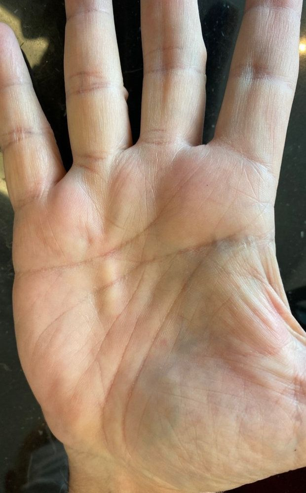
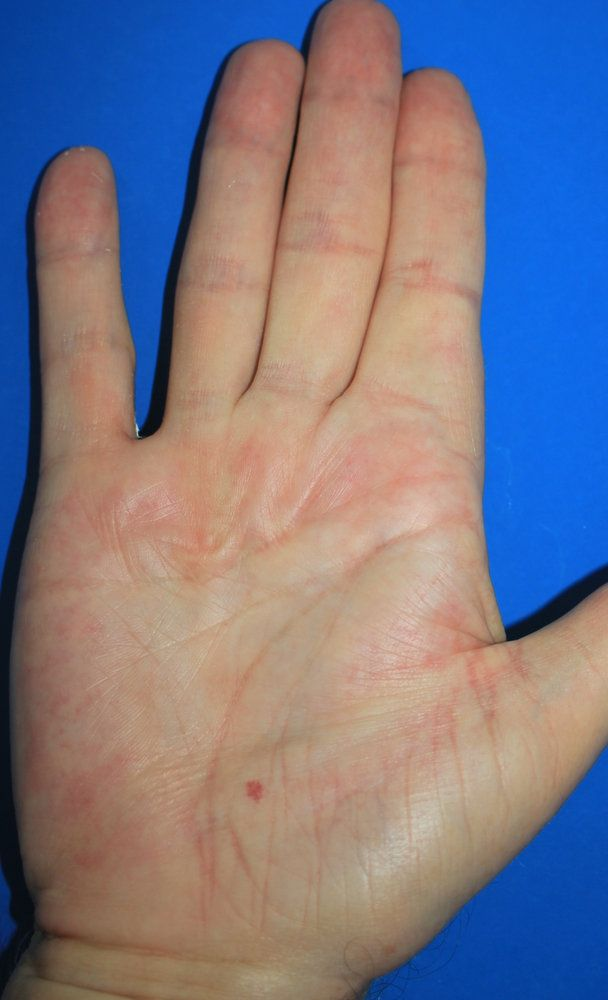
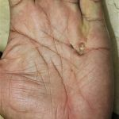
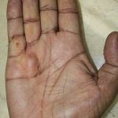
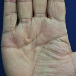
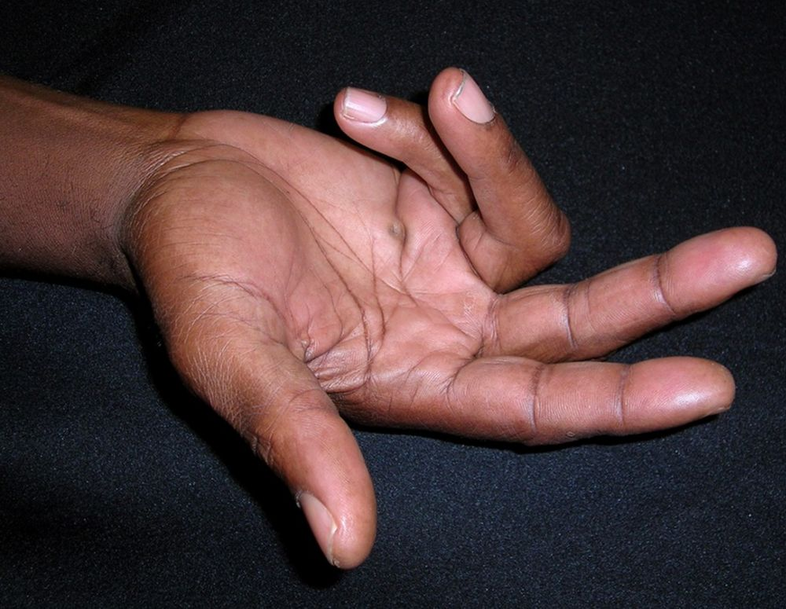
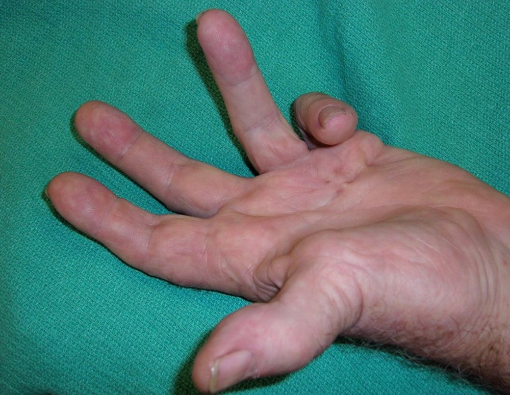
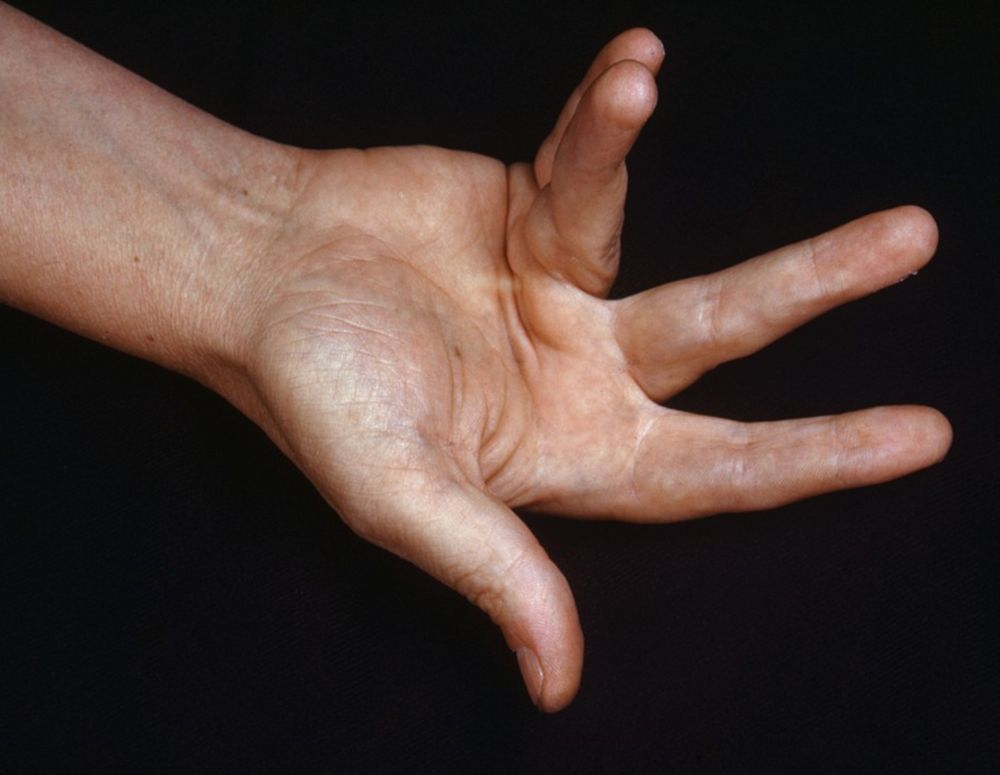
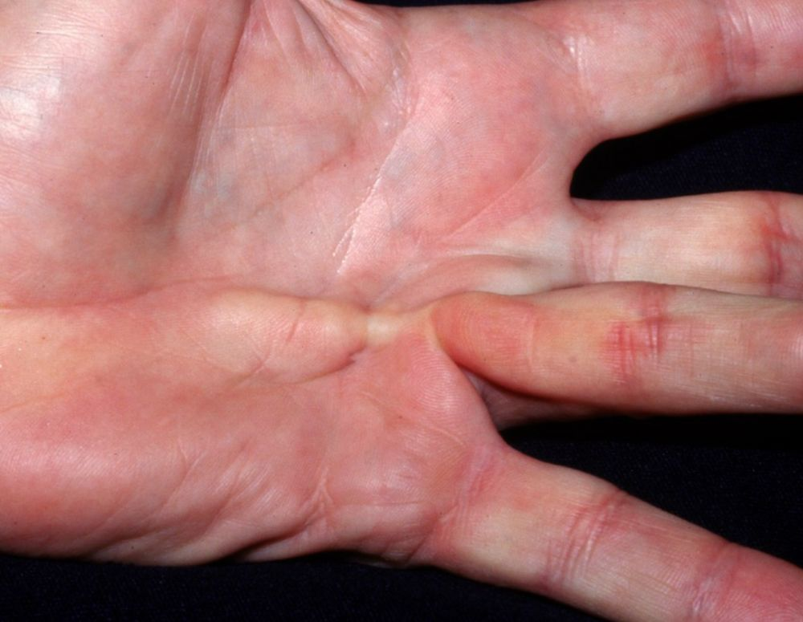
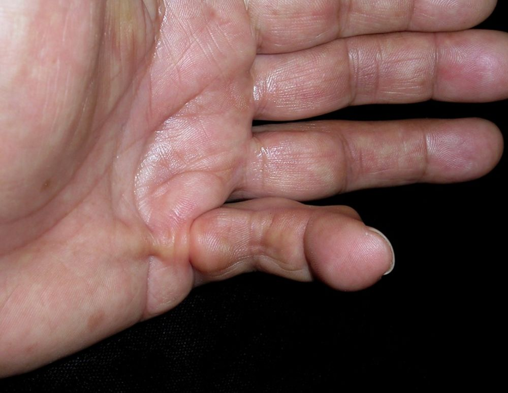

A doença de Dupuytren é um distúrbio fibrosante que resulta em espessamento e encurtamento lentamente progressivos da fáscia palmar, levando a contraturas digitais, particularmente nas articulações metacarpofalangeanas ou nas articulações interfalangeanas proximais. A contratura de Dupuytren é uma condição comum que tem o potencial de ser debilitante. A distinção entre a contratura de Dupuytren e a doença é que a contratura é uma nomenclatura reservada para aqueles pacientes com função afetada. Em um estudo escandinavo, apenas 35% dos pacientes com nódulos ou cordões evoluíram para contratura ao longo de 18 anos de acompanhamento.
Epidemiologia
A prevalência aumenta com a idade, sendo mais frequente a partir dos 40 anos, com a razão homem/mulher podendo atingir o valor de 5,9:1. A prevalência da doença é extremamente variável de acordo com a localização geográfica, sendo superior no Norte da Europa e incomum na Ásia e África. Os valores variam de 0,2% até 56% (a prevalência mundial é de 8%), para o que pode contribuir fatores genéticos, ambientais ou uma combinação de ambos. Ocasionalmente, a contratura de Dupuytren está associada com espessamento fascial plantar (doença de Ledderhose) e envolvimento do pênis (doença de Peyronie).
Fisiopatologia
A fisiopatologia básica envolve proliferação de fibroblastos e deposição de colágeno, levando a contraturas da fáscia palmar. Al-Qattan criou a hipótese de que um indivíduo com predisposição genética, fator responsável por 80% dos casos, para desenvolver a doença experimenta um segundo evento estimulante (fumo, diabetes, trauma, alcoolismo), resultando em isquemia microvascular. Os radicais livres levam à proliferação de fibroblastos, que se diferenciam em miofibroblasto, resultando em aumento do colágeno tipo III, que substitui o colágeno tipo I normal e na produção de numerosas citocinas.
Manifestações clínicas
Os sintomas geralmente relatados pelos pacientes são: diminuição da amplitude de movimento, perda de destreza ,dormência persistente em áreas onde a pele foi elevada e sensibilidade ao frio, com um risco cumulativo de 3,6 a 39,1% para todas as complicações tomadas em conjunto. As condições possivelmente relacionadas à doença são diabetes mellitus, abuso de álcool, infecção pelo HIV, epilepsia, trauma, trabalho manual com exposição vibratória, tabagismo. Salienta-se também doenças hepáticas como condições relacionadas. A contratura de Dupuytren é um diagnóstico feito inteiramente clinicamente com história do paciente focada na função e interrupção das atividades da vida diária (como dificuldade para lavar, vestir e realizar tarefas em espaços estreitos), história familiar e elementos-chave da história social (como tabagismo e histórico de álcool).
O quarto quirodáctilo é afetado com mais frequência, seguido pelo quinto quirodáctilo. A doença pode ser bilateral, mas geralmente não é simétrica em gravidade. Os nódulos ou espessamento são indolores, a menos que haja compressão do nervo ou tenossinovite. Com a progressão da doença, pode ocorrer a contratura em flexão das articulações da mão. Os nódulos pré-tendinosos que se formam nas pregas de flexão palmar poderão ser indolores ou moderadamente dolorosos. À medida que aumentam, os nódulos de Dupuytren desenvolvem cordões que, uma vez espessados, encurtam e levam à contratura. O diagnóstico é clínico e raramente são necessários exames complementares .Outros elementos do exame do paciente podem revelar patologias associadas, como as almofadas de Garrod causando calos no aspecto dorsal das juntas da mão.
Diagnóstico diferencial
A doença deve ser diferenciada de várias outras condições que afetam a mão, incluindo o dedo em gatilho (tenossinovite estenosante), cisto ganglionar. Ao contrário da contratura de Dupuytren, o dedo em gatilho normalmente envolve dor com flexão, seguida pela incapacidade de estender o dígito afetado.
Um pequeno nódulo móvel sensível à palpação na articulação metacarpofalangeana é provavelmente um cisto ganglionar. As condições a considerar no diagnóstico diferencial da contratura de Dupuytren incluem o seguinte: fibroma, tumor de células gigantes, neurofibroma, tendinite palmar, paralisia do nervo ulnar, entre outras.
Tratamento
A escolha da abordagem terapêutica depende em grande parte da gravidade da doença, grau de deformidade e limitações na função. Embora não haja consenso, é geralmente aceito que os procedimentos cirúrgicos fiquem reservados para pacientes com contraturas > 30-40º ou com incapacidade significativa. Não há cura absoluta para a contratura de Dupuytren. O objetivo primário do manejo é controlar e corrigir a deformidade e prevenir lesão neurovascular. Isso pode ser obtido por excisão, ruptura ou dissolução do cordão fibroso, permitindo a extensão do dedo afetado e, assim, melhorando a função da mão. Infelizmente, nem todo tecido de Dupuytren pode ser extirpado e, portanto, há sempre o risco de recorrência da doença, seja no mesmo local ou em outro local.
Pacientes com doença leve podem ser monitorados ambulatorialmente a cada 6-12 meses. O alongamento com a aplicação de ondas de calor e ultrassonográficas pode ser útil nos estágios iniciais da doença. As intervenções cirúrgicas consistem principalmente de fasciectomia. Qualquer grau de contratura de interfalangeana proximal acarreta mau prognóstico, e a excisão da fáscia envolvida pode não corrigir a contratura articular, especialmente se for de longa duração.
A escala de Tubiana classifica a contratura de Dupuytren em cinco estágios, com base no grau de flexão dos dedos afetados:
Estágios da Escala de Tubiana:
Estágio 0:
Sem contratura visível ou palpável.
Pode haver nódulos ou espessamento da fáscia, mas sem deformidade.
Estágio 1:
Contratura leve, com uma flexão total dos dedos afetados entre 0° e 45°.
A função da mão é geralmente preservada.
Estágio 2:
Contratura moderada, com uma flexão total dos dedos entre 45° e 90°.
Começa a haver limitação funcional, mas ainda é possível realizar a maioria das atividades diárias.
Estágio 3:
Contratura grave, com uma flexão total dos dedos entre 90° e 135°.
Há uma limitação significativa da função da mão, dificultando atividades cotidianas.
Estágio 4:
Contratura muito grave, com uma flexão total dos dedos superior a 135°.
A função da mão está severamente comprometida, com grande dificuldade ou impossibilidade de estender os dedos.
Fisioterapia. As opções incluem talas noturnas ou de extensão, exercícios de alongamento e massagem de fricção. Tem havido uma série de estudos examinando o efeito da fisioterapia na modificação da doença tanto isoladamente quanto como adjuvante à cirurgia. Um estudo mostrou uma melhora de 80% de seus pacientes com talas de extensão noturna, 9 variando de 2 a 12° de melhora.
Radioterapia. A radioterapia tem sido hipotetizada por inibir a proliferação de fibroblastos e, assim, ter um efeito antiinflamatório, prevenindo o agravamento do processo patológico. Uma revisão recente identificou seis estudos, com 698 pacientes no total e 770 mãos irradiadas. A maioria da dosagem de radioterapia foi de 30 Gy, com número de facções variando de 2 a 14,93% dos pacientes em Tubiana estágio N ou I. Um número estatisticamente significativo teve melhora na medida subjetiva e objetiva (fixação e retração da pele, déficit de extensão, taxas de progressão) a curto prazo (até 1 ano). 3-10% necessitaram de cirurgia adicional. Isso sugere que a radioterapia pode ser benéfica nos estágios iniciais da doença, no entanto, há um acompanhamento limitado a longo prazo e falta de grupos de controle. Deve-se notar também que a radioterapia está associada a uma alta incidência de efeitos colaterais agudos (eritema; 20-40%) e crônicos (atrofia da pele; menos de 10%) e baixa incidência de malignidade (0,02%).
Fasciectomia com agulha. Este procedimento envolve a divisão percutânea de bandas fasciais usando uma agulha hipodérmica. As vantagens deste procedimento são que ele pode ser feito sob anestesia local em ambiente ambulatorial, tornando-o muito econômico e minimamente invasivo. As desvantagens são que não remove o tecido patológico e não é eficaz na doença grave. Devido à natureza percutânea do procedimento, os feixes neurovasculares estão em risco de lesão, no entanto, um estudo recente não relatou danos neurovasculares significativos em 54 pacientes e apenas uma disestesia transitória. A principal questão para essa técnica é a taxa de recorrência significativamente alta, variando de 9 a 75% em cinco anos. As recorrências refletem a fisiopatologia, tendo em vista que é uma doença sem cura, e não devem ser consideradas complicações do tratamento.
Colagenase. Clostridium histolyticum é uma bactéria gram-positiva, que produz uma série de toxinas, entre as quais a colagenase (Xiapex®, Pfizer Inc., New York, NY, USA). Causa lise do colágeno tipo III patológico nas cordas, revertendo assim o efeito das contraturas. O uso da colagenase Clostridium histolyticum no tratamento de Dupuytren aumentou após os resultados do estudo POINT X, que analisou 254 pacientes europeus. 93% dos dedos tratados eram pequenos ou anelares. A melhora média foi de 34° no dia 1 e 42° no dia 7. Essa melhora foi mantida em 6 meses, com uma média de 1,2 injeções necessárias por paciente e recuperação mediana de 4 dias. A satisfação do paciente foi relatada como 87%. O procedimento é geralmente considerado seguro, mas várias complicações têm sido observadas, incluindo risco de ruptura do tendão (0,3%).
A terapia com colagenase parece uma opção sensata para a doença de Dupuytren com estágio Tubiana mais precoce e contraturas que afetam predominantemente a articulação metacarpofalangeana. As contraturas com estágios tubianos mais elevados que também afetam as articulação interfalângicas proximais devem ser tratadas predominantemente com fasciectomia limitada.
REFERÊNCIAS BIBLIOGRÁFICAS
1. Therapy for Dupuytren's Disease (II): Collagenase Therapy vs. Limited Fasciectomy-A Long-Term Comparative Study. Wachtel N, Dingler FR, Kuhlmann C, Mert S, Haas-Lützenberger EM, Alt V, Moellhoff N, Giunta R, Demmer W. Life (Basel). 2025 Jan 10;15(1):76.
2. The presentation and treatment of Dupuytren's disease in Dutch general practitioner care. van Straalen RJM, Broekstra DC, Werker PMN, de Boer MR. Fam Pract. 2025 Feb 7;42(2):cmae065.
3. Use of a perforator-based flap from the ulnar palmar artery for the repair of defects caused by the treatment of severe contractures due to Dupuytren's disease. Dai J, Wang H, Wang H, Sun X, Zhang Y.
Front Surg. 2025 Jan 23;11:1508100.
4. Treatments for Dupuytren's Contracture. Rayan G, Porembski M. N Engl J Med. 2025 Jan 23;392(4):10.1056/NEJMc2415105#sa2.
5. Dupuytren Contracture. Walthall J, Anand P, Rehman UH. 2023 Feb 26. In: StatPearls [Internet]. Treasure Island (FL): StatPearls Publishing; 2025 Jan–. PMID: 30252330
Atlas de imagens 10




















Na Skin Prime
Como podemos ajudar
Entre os recursos citados para Doença de Dupuytren, estes estão disponíveis na clínica:
Tratamentos